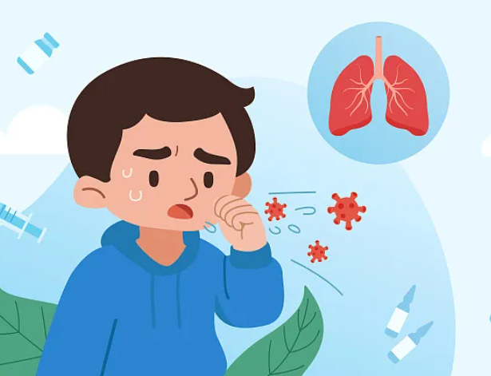
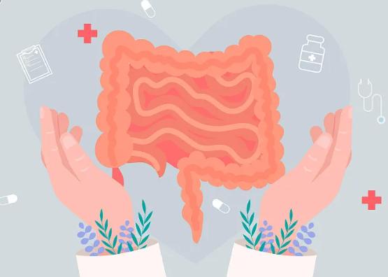

全国法定传染病疫情情况
2026年2月全国传染病疫情概况
2026-2-152026年2月（2月1日0时至28日24时），全国（不含香港、澳门特别行政区和台湾地区，下同）共报告法定传染病852909例，死亡1384人。
甲类传染病无发病、死亡报告。
乙类传染病共报告发病236525例，死亡1382人。报告发病数居前5位的病种依次为病毒性肝炎、肺结核、梅毒、新型冠状病毒感染和淋病，占乙类传染病报告病例总数的95.6%。
丙类传染病共报告发病616384例，报告死亡2人。报告发病数居前3位的病种依次为流行性感冒、其他感染性腹泻病和手足口病，占丙类传染病报告病例总数的99.2%。
2026年1月全国传染病疫情概况
2026-1-152026年1月（1月1日0时至31日24时），全国共报告法定传染病1898294例，死亡1930人。
甲类传染病无发病、死亡报告。
乙类传染病共报告发病277621例，死亡1927人。报告发病数居前5位的病种依次为病毒性肝炎、肺结核、梅毒、新型冠状病毒感染和淋病，占乙类传染病报告病例总数的95.2%。
丙类传染病共报告发病1620673例，报告死亡3人。报告发病数居前3位的病种依次为流行性感冒、其他感染性腹泻病和手足口病，占丙类传染病报告病例总数的99.1%。
2025年12月全国传染病疫情概况
2025-12-152025年12月（12月1日0时至31日24时），全国共报告法定传染病1756321例，死亡1876人。
甲类传染病无发病、死亡报告。
乙类传染病共报告发病265432例，死亡1873人。报告发病数居前5位的病种依次为病毒性肝炎、肺结核、梅毒、新型冠状病毒感染和淋病，占乙类传染病报告病例总数的94.8%。
丙类传染病共报告发病1490889例，报告死亡3人。报告发病数居前3位的病种依次为流行性感冒、其他感染性腹泻病和手足口病，占丙类传染病报告病例总数的99.0%。
健康提示
保持良好的个人卫生习惯
勤洗手，使用肥皂和流动水洗手至少20秒，尤其在接触公共物品后。
加强室内通风
每天开窗通风2-3次，每次30分钟以上，保持室内空气流通。
合理饮食，增强免疫力
均衡饮食，多吃蔬菜水果，适量运动，保证充足睡眠。
及时接种疫苗
按照免疫规划程序接种疫苗，预防相关传染病。
疾病预防
了解常见疾病的预防措施和健康知识
疫情上报
及时上报传染病线索，共同防控疫情
附近医院
查询周边医疗机构信息和联系方式
2026年2月全国传染病疫情概况
2026-2-15
2026年2月（2月1日0时至28日24时），全国（不含香港、澳门特别行政区和台湾地区，下同）共报告法定传染病852909例，死亡1384人。
甲类传染病无发病、死亡报告。
乙类传染病共报告发病236525例，死亡1382人。报告发病数居前5位的病种依次为病毒性肝炎、肺结核、梅毒、新型冠状病毒感染和淋病，占乙类传染病报告病例总数的95.6%。传染性非典型肺炎、脊髓灰质炎、流行性乙型脑炎、白喉和新生儿破伤风无发病、死亡报告。
丙类传染病共报告发病616384例，报告死亡2人。报告发病数居前3位的病种依次为流行性感冒、其他感染性腹泻病和手足口病，占丙类传染病报告病例总数的99.2%。
同期，重点监测的其他非法定传染病共报告发病39559例，死亡1人。报告发病的病种主要为水痘和肝吸虫病，两个病种报告病例数合计占重点监测的其他传染病报告病例总数的99.9%。
2026年2月全国传染病报告发病、死亡统计表
| 病名 | 发病数 | 死亡数 |
|---|---|---|
| 甲乙丙类传染病总计 | 852909 | 1384 |
| 甲乙类传染病合计 | 236525 | 1382 |
| 鼠疫 | 0 | 0 |
| 霍乱 | 0 | 0 |
| 新型冠状病毒感染 | 19453 | 1 |
| 艾滋病 | 2668 | 1165 |
| 病毒性肝炎 | 111021 | 88 |
| 肺结核 | 44105 | 111 |
| 梅毒 | 43817 | 2 |
| 淋病 | 7640 | 0 |
| 丙类传染病合计 | 616384 | 2 |
| 流行性感冒 | 394141 | 1 |
| 其他感染性腹泻病 | 194710 | 0 |
| 手足口病 | 22708 | 1 |
注释
1. 通过传染病网络直报系统报告的死亡数据不作为中国传染病死因顺位依据。
2. 新型冠状病毒感染死亡病例包括新型冠状病毒感染导致呼吸功能衰竭死亡病例和基础疾病合并新型冠状病毒感染死亡病例。
3. 艾滋病死亡数是累计报告艾滋病病人在当月报告的全死因死亡数。
4. 病毒性肝炎的发病数、死亡数为甲型肝炎、乙型肝炎、丙型肝炎、丁型肝炎、戊型肝炎、未分型肝炎报告发病数、死亡数的合计。
5. 人感染新亚型流感包括的病原分型为H3N8、H5N1、H5N6、H7N4、H7N9、H9N2、H10N3、H10N5、H10N8、欧亚禽H1N1，以及发现的其他新亚型流感病毒感染。
6. 本月15例狂犬病死亡病例中，6例为当月发病，其余9例为往月发病。
7. 自2023年9月20日起，猴痘纳入乙类传染病管理。27例猴痘病例均为Ⅱb亚分支，其中4例为境外输入病例，23例为本土病例。
8. 自2019年5月1日起“结核性胸膜炎”归入肺结核分类统计，不再报告到“其他法定管理以及重点监测传染病”中。
9. 报告的疟疾病例均为境外输入病例。
10. 重点监测的其他传染病自2026年1月起纳入公布。
呼吸道传染病
近期我国的呼吸道多病原监测显示，常见病原体为：流感嗜血杆菌、鼻病毒、肺炎链球菌、普通冠状病毒、副流感病毒、新冠病毒、腺病毒、A族链球菌、流感病毒等。
寒露过后，天气逐渐由凉爽转为寒冷，病毒在外界存活时间延长，呼吸道传染病传播风险增加。

疾病预防
疾病预防是指采取各种措施来预防疾病的发生和传播，包括接种疫苗、保持良好的个人卫生习惯、加强环境卫生等。通过有效的预防措施，可以显著降低疾病的发生率。
疾病上报
疾病上报是指将发现的传染病或可疑病例及时报告给相关部门，以便采取控制措施，防止疾病的进一步传播。及时上报对于疫情防控至关重要。
肠道传染病
肠道传染病是指病原体通过污染食物、水源或接触传播，经口进入人体消化道引起的传染性疾病。常见的肠道传染病包括霍乱、伤寒、副伤寒、痢疾、手足口病、诺如病毒感染等。
随着气温升高，肠道传染病进入高发季节，应注意饮食卫生，预防肠道传染病的发生。

疾病预防
疾病预防是指采取各种措施来预防疾病的发生和传播，包括接种疫苗、保持良好的个人卫生习惯、加强环境卫生等。通过有效的预防措施，可以显著降低疾病的发生率。
疾病上报
疾病上报是指将发现的传染病或可疑病例及时报告给相关部门，以便采取控制措施，防止疾病的进一步传播。及时上报对于疫情防控至关重要。
虫媒传染病
虫媒传染病是指由节肢动物（如蚊子、蜱虫、跳蚤等）传播的传染性疾病。常见的虫媒传染病包括疟疾、登革热、流行性乙型脑炎、莱姆病、鼠疫等。
夏季是虫媒传染病的高发季节，应做好防蚊、防蜱等措施，避免被蚊虫叮咬。
疾病预防
疾病预防是指采取各种措施来预防疾病的发生和传播，包括接种疫苗、保持良好的个人卫生习惯、加强环境卫生等。通过有效的预防措施，可以显著降低疾病的发生率。
疾病上报
疾病上报是指将发现的传染病或可疑病例及时报告给相关部门，以便采取控制措施，防止疾病的进一步传播。及时上报对于疫情防控至关重要。
普通疾病
疾病筛选
发病系统
病因
传播性
病程
肿瘤性质
其他特殊分类
普通感冒
常见的上呼吸道感染，主要由病毒引起，症状包括鼻塞、流涕、咳嗽等。
过敏性鼻炎
由过敏原引起的鼻黏膜炎症，症状包括打喷嚏、流鼻涕、鼻塞等。
急性支气管炎
支气管黏膜的急性炎症，主要症状为咳嗽、咳痰，可伴有发热。
肺炎
肺部的炎症，可由细菌、病毒等感染引起，症状包括发热、咳嗽、呼吸困难等。
慢性阻塞性肺疾病
慢性气道阻塞性疾病，主要表现为慢性咳嗽、咳痰、气短等症状。
哮喘
慢性气道炎症性疾病，主要表现为反复发作的喘息、气急、胸闷或咳嗽。
急性胃肠炎
由病毒或细菌感染引起的胃肠道炎症，症状包括腹痛、腹泻、呕吐等。
慢性胃炎
胃黏膜的慢性炎症，症状包括上腹部不适、疼痛、恶心、呕吐等。
消化性溃疡
胃或十二指肠黏膜的溃疡性病变，主要症状为周期性上腹痛。
肠易激综合征
功能性肠道疾病，主要症状为腹痛、腹胀、排便习惯改变。
胆囊炎
胆囊的炎症，主要症状为右上腹疼痛、恶心、呕吐等。
脂肪肝
肝脏内脂肪堆积过多的病变，可由肥胖、酗酒等因素引起。
高血压
常见的慢性疾病，以动脉血压持续升高为特征，可能导致心脑血管并发症。
冠心病
冠状动脉粥样硬化性心脏病，主要表现为胸痛、胸闷等症状。
心律失常
心脏节律异常，可表现为心跳过快、过慢或不规则。
心力衰竭
心脏泵血功能受损，主要症状为呼吸困难、乏力、水肿等。
心肌梗死
冠状动脉阻塞导致心肌缺血坏死，主要表现为剧烈胸痛。
先天性心脏病
出生时即存在的心脏结构异常，症状因病情轻重而异。
偏头痛
反复发作的中重度头痛，常伴有恶心、呕吐、光敏感等症状。
癫痫
大脑神经元异常放电导致的反复发作的短暂性脑功能障碍。
脑卒中
脑血管意外，包括缺血性和出血性两种类型，可导致肢体瘫痪、言语障碍等。
帕金森病
中老年人常见的神经系统变性疾病，主要表现为震颤、肌强直、运动迟缓等。
阿尔茨海默病
老年痴呆的最常见类型，主要表现为记忆力减退、认知功能障碍等。
坐骨神经痛
坐骨神经受压或炎症引起的疼痛，主要表现为臀部、大腿后侧、小腿外侧疼痛。
膝关节炎
膝关节的退行性病变，主要表现为关节疼痛、肿胀、活动受限等。
骨质疏松
骨密度降低，骨组织微结构破坏，容易发生骨折的代谢性骨病。
颈椎病
颈椎间盘退变及其继发的病理改变，可引起颈肩痛、头晕、上肢麻木等症状。
腰椎间盘突出症
腰椎间盘退变、纤维环破裂、髓核突出压迫神经根引起的一系列症状。
骨折
骨的连续性中断，可由外伤、骨质疏松等原因引起。
类风湿关节炎
自身免疫性疾病，主要表现为对称性、多关节炎症，可导致关节畸形。
系统性红斑狼疮
自身免疫性疾病，可累及全身多个系统和器官，表现多样。
类风湿关节炎
自身免疫性疾病，主要表现为对称性、多关节炎症，可导致关节畸形。
强直性脊柱炎
慢性炎症性疾病，主要侵犯脊柱和骶髂关节，可导致脊柱强直。
干燥综合征
自身免疫性疾病，主要表现为口干、眼干等外分泌腺体功能障碍。
系统性硬化症
自身免疫性疾病，主要表现为皮肤增厚、变硬，可累及内脏器官。
多发性肌炎
自身免疫性疾病，主要表现为肌肉炎症和无力。
湿疹
常见的皮肤炎症性疾病，表现为红斑、丘疹、水疱、渗出、结痂等。
荨麻疹
皮肤黏膜的局限性水肿反应，表现为风团、瘙痒等症状。
痤疮
常见的毛囊皮脂腺慢性炎症性疾病，表现为粉刺、丘疹、脓疱等。
银屑病
慢性炎症性皮肤病，表现为红斑、鳞屑等症状。
皮炎
皮肤炎症的统称，可由过敏、刺激等多种因素引起。
灰指甲
由真菌感染引起的甲病变，表现为指甲变色、增厚、变形等。
上呼吸道感染
由病毒或细菌引起的上呼吸道感染，主要症状为发热、咳嗽、流涕等。
流感
由流感病毒引起的急性呼吸道传染病，主要症状为高热、头痛、全身酸痛等。
肺炎
肺部的炎症，可由细菌、病毒等感染引起，主要症状为发热、咳嗽、呼吸困难等。
急性胃肠炎
由病毒或细菌感染引起的胃肠道炎症，主要症状为发热、腹痛、腹泻、呕吐等。
扁桃体炎
扁桃体的炎症，可由细菌或病毒感染引起，主要症状为发热、咽痛等。
尿路感染
由细菌感染引起的尿路炎症，主要症状为发热、尿频、尿急、尿痛等。
糖尿病
由于胰岛素分泌不足或作用缺陷引起的代谢性疾病，主要表现为血糖升高。
甲状腺功能亢进
甲状腺激素分泌过多引起的疾病，主要表现为心悸、多汗、体重减轻等。
甲状腺功能减退
甲状腺激素分泌不足引起的疾病，主要表现为乏力、怕冷、体重增加等。
骨质疏松
骨密度降低，骨组织微结构破坏，容易发生骨折的代谢性骨病。
痛风
由于尿酸代谢异常导致尿酸盐沉积引起的疾病，主要表现为关节疼痛。
多囊卵巢综合征
常见的妇科内分泌疾病，主要表现为月经不规律、多毛、痤疮等。
结膜炎
结膜的炎症，可由感染、过敏等因素引起，主要表现为眼红、分泌物增多等。
白内障
晶状体混浊导致的视力障碍，主要表现为视力下降、视物模糊等。
中耳炎
中耳的炎症，可由感染引起，主要表现为耳痛、听力下降等。
鼻窦炎
鼻窦的炎症，可由感染或过敏引起，主要表现为鼻塞、流涕、头痛等。
龋齿
牙体硬组织的慢性进行性破坏，主要由细菌感染引起。
牙周病
牙周组织的慢性炎症，主要表现为牙龈出血、牙槽骨吸收等。
健康建议
及时就医
出现不适症状时应及时就医，避免自行用药延误病情。
合理用药
遵循医生建议，合理使用药物，不要滥用抗生素。
健康生活方式
保持均衡饮食、适量运动、充足睡眠，增强身体免疫力。
定期体检
定期进行健康体检，及早发现和预防疾病。
社区服务站
线上问诊
在线咨询医生，获取专业医疗建议，无需排队等候。支持文字、语音和视频问诊，方便快捷。
专业医生在线答疑
24小时服务
电子处方服务
预约看病
提前预约社区医生，避免长时间等待，享受便捷医疗服务。可选择合适的时间和医生。
在线预约，无需排队
医生信息透明
预约提醒服务
药品配送
线上购药，配送到家
健康档案
个人健康信息管理
转诊服务
便捷转诊至上级医院
服务时间与联系方式
服务时间
周一至周五
8:00 - 18:00
周六
9:00 - 16:00
周日
9:00 - 12:00
联系方式
服务热线：010-12345678
地址：北京市朝阳区社区服务中心
微信：CommunityMedical
线上问诊
医生答复
王医生
内科
2026-03-30 10:30
您好，根据您描述的症状，您可能是患了普通感冒。建议您多休息，多喝水，保持室内通风。如果症状持续加重，建议您到医院就诊。
李医生
神经科
2026-03-29 14:20
您的头痛可能是由于压力过大或睡眠不足引起的。建议您保持充足的睡眠，适当放松，避免长时间使用电子设备。如果头痛持续不缓解，建议您到医院就诊。
王医生
内科
2026-03-30
医生您好，我最近几天感觉鼻塞、流涕、咳嗽，还有点发热，请问我这是怎么了？
10:25
您好，根据您描述的症状，您可能是患了普通感冒。建议您多休息，多喝水，保持室内通风。如果症状持续加重，建议您到医院就诊。
10:30
另外，您可以服用一些感冒药来缓解症状，如布洛芬或对乙酰氨基酚。请注意按照说明书的剂量服用，不要超量。
10:35
选择问诊方式
文字问诊
24小时在线
语音问诊
工作时间
视频问诊
工作时间
选择科室
预约看病
选择科室
选择医生
请先选择科室
选择日期
今天
27
明天
28
周四
29
周五
30
周六
31
周日
1
周一
2
选择时间
预约成功！
您已成功预约就诊
预约信息
就诊提醒
请记得在预约时间前15分钟到达医院，携带身份证和医保卡。如需取消预约，请提前2小时操作。
药品配送
搜索药品
常用药品
配送信息
我的订单
ORD20260327001
已配送2026-03-27 10:30
感冒清热颗粒 ×1
布洛芬缓释胶囊 ×1
ORD20260325001
已配送2026-03-25 14:20
阿莫西林胶囊 ×2
维生素C片 ×1
ORD20260320001
已配送2026-03-20 09:15
奥美拉唑肠溶胶囊 ×1
健康档案
个人基本信息
健康记录
体检记录
2026-01-15
身高：175cm | 体重：68kg | 血压：120/80mmHg
医生建议：保持健康饮食，适量运动
就诊记录
2025-12-10
诊断：上呼吸道感染
处方：感冒清热颗粒、布洛芬缓释胶囊
疫苗接种记录
流感疫苗
2025-10-05
接种地点：北京市朝阳区社区卫生服务中心
新冠疫苗加强针
2025-03-20
接种地点：北京市朝阳区社区卫生服务中心
转诊服务
转诊原因
选择转诊医院
北京协和医院
三级甲等 | 综合医院
地址：北京市东城区帅府园1号
北京大学第三医院
三级甲等 | 综合医院
地址：北京市海淀区花园北路49号
北京朝阳医院
三级甲等 | 综合医院
地址：北京市朝阳区工人体育场南路8号